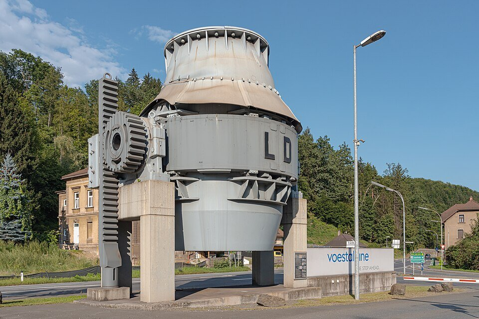
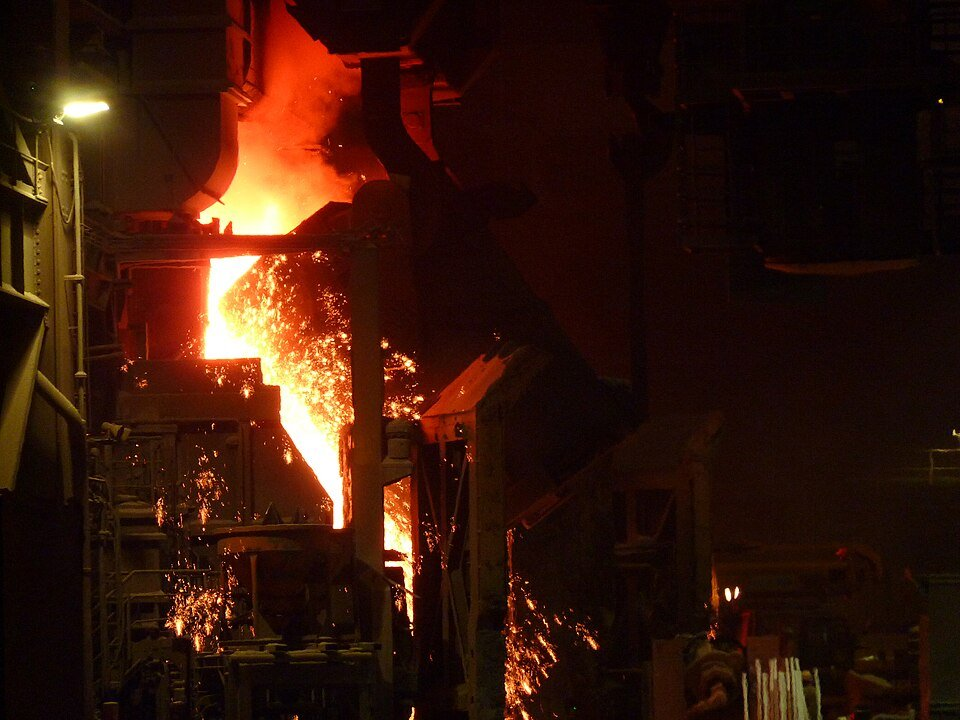
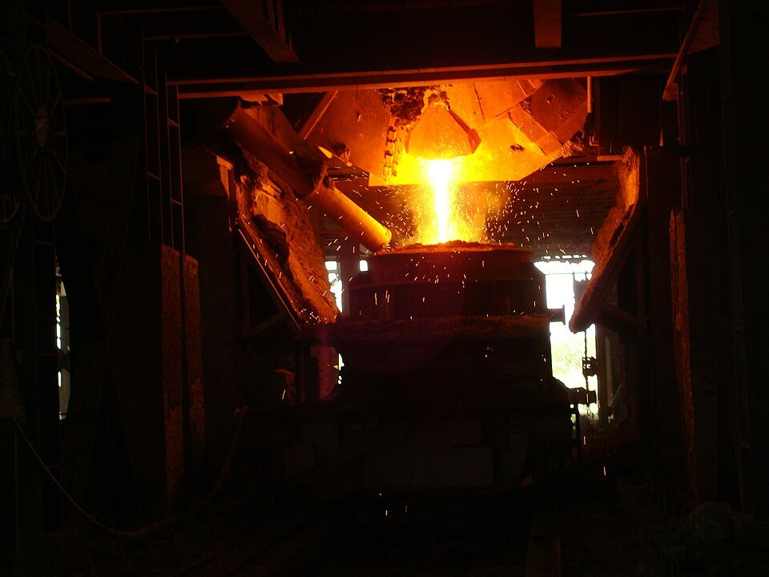

STEEL 101 · BOF STEELMAKING · 2026.10
轉爐怎麼煉鋼：從兌鐵水、吹氧到出鋼的四十分鐘
鋼鐵潮流工作室 · 發布 2026.10.19

本期重點
上一課〈高爐怎麼煉鐵〉走到鐵水流出出鐵口、裝進魚雷車。但鐵水含碳約 4–4.5%，又硬又脆，還不能軋成鋼板。這一課接著看一貫作業鋼廠的下一站：轉爐。它不燒任何燃料，只往鐵水裡吹純氧，四十分鐘上下就把一爐鐵水煉成鋼。
- 轉爐的任務是「氧化」。 高爐用碳把鐵礦的氧拿走；轉爐反過來，用氧把鐵水裡多餘的碳、矽、錳、磷燒掉。
- 不燒燃料，靠反應放熱。 碳、矽被氧化時放出大量熱，鋼液溫度從約 1,350°C 一路升到 1,650°C 以上；多出來的熱，正好用來熔化約一到三成的廢鋼。
- 擅長去磷，不擅長脫硫。 爐內是氧化環境，磷可以去掉九成以上；硫則多半在進轉爐前的鐵水預處理，以及出鋼後的鋼包精煉處理。
- 爐子會轉。 整座爐子掛在兩支耳軸上，加料、出鋼、倒渣都靠傾轉爐體完成，吹氧時再轉回直立。
以上為典型範圍，實際數值依各廠鐵水條件、爐容與鋼種而異。
轉爐長什麼樣子
轉爐是一座上端收口、底部圓弧的鋼殼大罐子，裡面砌著耐火磚。它的大小通常以「每爐出鋼量」計算：世界上的轉爐從 30 噸到 400 噸都有，多數在 100 到 250 噸之間。下圖以中鋼最大的 250 噸轉爐容量為準，依典型的設計比例畫出：爐膛內容積約每噸鋼 1 立方公尺，爐帽的半錐角約 25–30°。
本站繪製之剖面示意圖。爐膛容積與爐帽角度依 ISPATGURU 的典型設計比例，以 250 噸推算；熔池深度參考一座 210 噸轉爐的 1.8 公尺；各廠實際尺寸、底吹元件數量與出鋼口位置不同。圖中為吹氧中段，乳化渣已淹過氧槍噴頭。手機上可以左右滑動看全圖。
- 爐體與內襯。 鋼殼內砌鎂碳磚，直接承受鋼液、爐渣與氧氣射流的沖刷。上端收窄成爐帽與爐口，爐口大小要在散熱、沖蝕與結瘤之間取捨。
- 托圈與耳軸。 爐身中段套著一圈托圈，兩側伸出耳軸架在軸承上；傾動機構轉動耳軸，整座爐子就能前後傾轉，最大可轉一整圈。
- 氧槍與副槍。 氧槍是一支通水冷卻的長鋼管，前端銅製噴頭有 3–6 個噴孔，把氧氣加速到約 2 倍音速吹向熔池；副槍則在吹煉末段插入熔池，量測溫度與含碳量。
- 底吹元件。 現代轉爐多半「頂底複吹」：頂部吹氧，爐底的透氣元件同時吹入氬氣或氮氣攪拌。純頂吹轉爐的熔池混勻時間可長達 150–180 秒，從爐底吹氧的底吹轉爐只要 10–20 秒；頂底複吹則用少量底吹氣體來改善攪拌。
- 出鋼口。 開在爐帽的一側。出鋼時爐體向這一側傾倒，鋼液從爐渣下方流出出鋼口。
- 煙罩與爐氣回收。 爐口上方的煙罩收集爐氣；可升降的裙罩壓低時能擋住外面的空氣，讓爐氣裡的一氧化碳不燒掉，留下來回收當燃料。
一爐鋼的流程
轉爐和電爐一樣是一爐一爐的批次作業，但節奏更快。一爐鋼從鐵水預處理到出鋼後整理爐子，大致經過下面十個步驟：前三步準備爐料，中間五步是吹煉，最後兩步出鋼並整理爐子。
- 鐵水預處理鐵水先脫硫，硫通常可降到 0.004–0.005%
- 加廢鋼爐體向加料側傾轉，廢鋼箱先把廢鋼倒進爐內
- 兌鐵水鐵水包倒入約 1,300–1,350°C 的鐵水，蓋過廢鋼
- 下槍吹氧爐體直立，氧槍降入爐內，以超音速吹氧
- 加料造渣開吹後幾分鐘內加入石灰、白雲石，盡快造出流動的爐渣
- 脫碳高峰矽先燒完，接著碳大量燒成一氧化碳，乳化渣漲到兩公尺以上
- 副槍量測吹煉結束前約 2 分鐘，量溫度與碳，算出還要吹多少氧
- 提槍倒爐停氧提槍，爐體傾轉，必要時再測溫取樣
- 出鋼向出鋼側傾轉，鋼液流進鋼包，同時加入脫氧劑與合金
- 濺渣、倒渣以氮氣把爐渣噴上爐壁護襯，再把剩下的爐渣倒進渣罐
把十個步驟濃縮成六個畫面，轉爐在一爐裡大致這樣轉來轉去：
本站繪製之示意圖，簡化自一般頂底複吹轉爐的操作順序；各廠是否使用副槍、是否每爐濺渣，以及加料與出鋼方向的配置不同。

吹氧：二十分鐘裡發生什麼
氧槍降到熔池上方約 2 公尺，開始吹氧。超音速的氧氣射流衝擊鋼液表面，打出一個凹坑，氧在這裡與鐵水中的元素反應。爐內的變化大致分成三段：
- 前段：矽先燒完。 鐵水裡的矽最先被氧化，開吹 3–5 分鐘就降到 0.005% 以下。氧化矽與加入的石灰結合，開始造渣；這段時間通常把氧槍拉高一點「軟吹」，讓渣中的氧化鐵多一些，幫助石灰溶解。
- 中段：碳燒得最快。 碳與氧反應成一氧化碳，脫碳速率最高可達每分鐘約 0.3%，一座 200 噸轉爐每分鐘燒掉約 600 公斤碳。大量氣泡讓爐渣、鋼液滴與氣體混成「乳化渣」，吹到三分之一左右，乳化層就超過 2 公尺，把氧槍噴頭淹在裡面；爐渣裡的鋼液滴可占一到兩成五，反應面積因此大增。
- 後段：碳少了，反應慢下來。 碳降到 0.2–0.5% 以下，脫碳速率開始下滑，渣中的氧化鐵又升高。碳降到約 0.1% 時，爐口的火焰幾乎消失。為了準確掌握終點，不少鋼廠用副槍在吹煉結束前約 2 分鐘量測溫度與碳，再修正最後的吹氧量。
錳與磷的變化比較曲折。錳在前段先被氧化進渣，中段部分回到鋼液，末段又再被氧化；磷在前段下降，中段溫度升高、渣中氧化鐵偏低時會短暫「回磷」，末段再降下來。所以吹煉不只是把碳燒掉，還要一路控制氧槍高度、渣況與溫度。
熱從哪裡來：不燒燃料的煉鋼爐
轉爐沒有電極、也不燒煤氣，熱量全部來自爐內的氧化反應，其中碳與矽貢獻最多，錳、鐵、磷也有一部分。鐵水入爐時約 1,300–1,350°C，吹完時鋼液升到約 1,650°C，出鋼溫度在 1,650–1,700°C 之間。
反應放出的熱，通常比把鐵水加熱到出鋼溫度所需的還多，多出來的熱要靠冷卻劑吸掉。最主要的冷卻劑就是廢鋼：廢鋼占金屬裝料約一到三成，用得越多，就越少用鐵水。其他冷卻劑還有鐵礦、燒結礦、石灰石與直接還原鐵；鐵礦的冷卻效果約是廢鋼的三倍，在一座 150 噸轉爐裡加 1 噸石灰石，鋼液溫度約降 12°C。
反過來說，廢鋼加得越多，熱就越不夠用。這正是一貫作業鋼廠提高轉爐廢鋼比的難處：中鋼把 IF 汽車用鋼的轉爐廢鋼比從約 10% 提高到 30%，靠的就是「轉爐熱能補償」等技術，補足多加廢鋼所需的熱量（見〈中鋼 IF 汽車用鋼 RC30〉）。
造渣：去磷容易、脫硫困難
開吹後幾分鐘內，要加入石灰（氧化鈣含量 92% 以上）與白雲石，盡快造出流動性好的爐渣；每噸粗鋼約用掉 65 公斤生石灰。爐渣的鹼度（CaO／SiO₂）最好維持在 3 以上，石灰用量約是鐵水含矽量的 6 倍；渣中再保持約 8–10% 的氧化鎂，可以減輕爐渣對鎂碳磚的侵蝕。每煉一噸鋼約產生一百公斤上下的爐渣，中鋼約為 105 公斤。
轉爐是氧化環境，各元素的去留和還原性的高爐正好相反：
| 元素 | 轉爐內（氧化環境） | 轉爐之外怎麼處理 |
|---|---|---|
| 碳 | 鐵水含碳約 4–4.5%，吹氧燒成一氧化碳排出，是轉爐最主要的任務 | 鋼包精煉或真空處理，再依鋼種微調 |
| 矽 | 最先被氧化，開吹 3–5 分鐘內降到 0.005% 以下，同時放出大量熱 | 出鋼時依鋼種加矽鐵、矽錳補回 |
| 錳 | 前段氧化進渣，中段部分回到鋼液，末段再氧化 | 出鋼時加錳鐵、矽錳調整 |
| 磷 | 低溫、高鹼度、渣中氧化鐵適量時去除最有效，可去除 90% 以上；高爐去不掉的磷，主要在這裡處理 | 出鋼時要擋渣，避免含磷爐渣流進鋼包回磷；極低磷鋼可用「雙渣法」，倒掉一次爐渣再重新造渣 |
| 硫 | 氧化性爐渣不利脫硫，硫在渣與鋼之間的分配比最多約 10 | 主要在進轉爐前的鐵水脫硫，常見方式是機械攪拌（KR 法）或噴吹鎂粉；出鋼後還有鋼包精煉 |
所以在一貫作業鋼廠裡，各段分工清楚：高爐負責「還原」得到鐵，鐵水預處理先把硫拿掉，轉爐負責「氧化」去碳、去磷，最後再交給鋼包精煉做精細調整。
出鋼與擋渣
吹煉結束、成分與溫度合格後，爐體向出鋼側傾轉，鋼液從爐帽一側的出鋼口流出，穿過浮在上面的爐渣下方，流進底下台車上的鋼包。這個階段的重點如下：
- 擋渣。 出鋼末段，爐渣會跟著鋼液流出。含磷的爐渣一旦流進鋼包，磷會回到鋼液，也會妨礙後段脫硫，所以出鋼末段要投入擋渣塞（slag dart）堵住出鋼口；目視觀察仍是主要的控制手段。
- 脫氧與合金。 吹完氧的鋼液含氧量高，出鋼時從上方料倉把錳鐵、矽錳、矽鐵等加進鋼包，一邊脫氧、一邊調整成分。
- 接下來的路。 鋼包送到二次精煉站做真空脫氣或鋼包爐升溫、脫硫，再送去連鑄澆成鋼胚。

轉爐氣與轉爐石
吹煉時大量的碳變成一氧化碳，從爐口衝出。出爐時溫度約 1,600–1,700°C，在煙罩裡冷卻到約 900°C，再經除塵清洗。現代轉爐多採「抑制燃燒」式回收：裙罩壓低、不讓空氣進來，一氧化碳就不會在煙道裡燒掉，每噸鋼可回收約 50–100 立方公尺的轉爐氣，含一氧化碳 55–60%，熱值比高爐煤氣高得多。回收的轉爐氣存進氣櫃，與焦爐煤氣、高爐煤氣一起當全廠燃料；煙罩冷卻還能回收蒸汽，每噸粗鋼約 80 公斤。
兩種副產煤氣的熱值（kcal／Nm³）
資料來源：ISPATGURU〈Basic Oxygen Furnace Gas Recovery and Cleaning System〉、〈Blast Furnace Gas Generation and Usage〉；高爐煤氣數字與〈高爐怎麼煉鐵〉一致。轉爐氣約相當於 6.7–8.4 MJ／Nm³。
爐渣的去化則是另一道題目。轉爐渣（俗稱轉爐石）殘留未熔的游離氧化鈣與氧化鎂，遇水會水化膨脹，讓轉爐石裂開甚至崩解，去化不易。依 2014 年的資料，中鋼每年產出約 110 萬噸轉爐石，約每噸鋼 105 公斤；2012 年完成年處理 60 萬噸的改質站，在熱渣還是液態時吹氧升溫、加入矽砂，讓游離石灰轉成穩定的化合物，2014 年起成功率提升到 94%。轉爐石也用於臺北港填海造地（見〈中鋼 2024 永續報告書導讀〉）。
爐襯：濺渣護爐
轉爐內襯每爐都受高溫鋼液、氧化性爐渣與噴濺的沖刷。延長爐襯壽命最有效的方法之一是「濺渣護爐」：出完鋼後，留下一部分調整過成分的爐渣，以噴槍吹入高壓氮氣 2–4 分鐘，把爐渣噴上爐壁，凝固成一層保護膜，主要護住爐身與耳軸附近的內襯，下一爐再由這層渣先承受沖刷。這個動作不一定每爐都做。
這項技術 1970 年就有人提出，但一直沒有大規模使用；1992 年美國 LTV 鋼鐵公司的 Indiana Harbor 廠率先報告用它成功延長爐襯壽命；ISPATGURU 記錄的例子中，Inland 公司 4 號轉爐工場的爐襯壽命超過 6 萬爐。磨損較嚴重的部位，則在爐役後期以噴補料修補。
歷史小註腳：一爐從十小時縮到四十分鐘
- 1856貝塞麥轉爐，往鐵水吹空氣
- 1878托馬斯法，鹼性內襯可去磷
- 1948Durrer 以 2.5 噸轉爐吹氧煉出鋼
- 1952林茲煉出第一爐 30 噸 LD 鋼
- 1953多納維茨 LD 轉爐投產
- 1970全球半數鋼產自氧氣轉爐
- 1992濺渣護爐成功延長爐襯壽命
- 2025轉爐占全球粗鋼 69.4%
早期空氣吹煉轉爐氧氣轉爐
- 先有轉爐，後有氧氣。 1856 年貝塞麥（Henry Bessemer）取得往鐵水吹氣煉鋼的專利，專利裡就提到吹氧；但接下來將近一百年，工業用氧不是買不到就是太貴，只能吹空氣。1878 年托馬斯法改用鹼性內襯，讓含磷高的鐵水也能煉鋼。
- 平爐的年代。 氧氣轉爐出現之前，另一個主力是平爐。平爐煉一爐鋼要 10–12 小時，氧氣轉爐不到 40 分鐘；Primetals 的資料指出，LD 轉爐的投資與操作成本也比平爐低約一半，這是它取代平爐的關鍵。
- 氧氣轉爐誕生。 瑞士的杜勒（Robert Durrer）1948 年以一座 2.5 噸試驗轉爐吹氧煉出鋼。奧地利 VÖEST 1949 年 6 月在林茲展開試驗，1952 年 11 月 27 日煉出第一爐 30 噸 LD 鋼；1953 年 5 月多納維茨的第二座 LD 工場跟著投產。
- 席捲全球。 1954 年底美國 McLouth 鋼廠率先引進；到 1970 年，全球半數、日本八成的鋼都出自氧氣轉爐。2025 年，轉爐生產的粗鋼仍占全球 69.4%。
對台灣鋼鐵業的意義
- 中鋼與中龍的煉鋼主力。 中鋼高雄廠有 6 座轉爐（官網列為鹽基性頂吹轉爐），150 噸與 250 噸各 3 座；中龍台中廠的高爐產線另有 3 座轉爐，年產能 500 萬噸。
- 提高廢鋼比是最直接的減碳手段。 多用廢鋼，就能少用高爐鐵水。報導指出，中鋼已把轉爐廢鋼比由約一成提高到兩成，IF 汽車用鋼更做到 30%；但前面說過，廢鋼一多，熱就不夠，熱能補償與廢鋼品質都是關鍵。
- 轉爐也在走向數位化。 中鋼開發的「轉爐溢渣監診系統」，實測可百分之百預警吹煉中的溢渣，協助操作人員在 10 秒內抑制，估計每座轉爐一年可省約 3,600 萬元。工研院與中鋼合作的轉爐出鋼數位雙生系統，則以約 600 萬顆粒子模擬一爐約 250 噸、1,600°C 的鋼液傾倒過程，模擬與實際的相符程度達九成以上，2024 年獲全球百大科技研發獎；工研院的報導提到，中鋼的轉爐每天要操作多達 85 個爐次。
- 副產物的循環利用。 轉爐氣回收當燃料，轉爐石改質後已做成地磚外售，也用於填海工程。一貫作業鋼廠最大的排碳來源在前段的高爐（見〈高爐怎麼煉鐵〉），轉爐端能做的，主要就是多用廢鋼、少用鐵水。
延伸閱讀
- 高爐怎麼煉鐵：從爐頂裝料、熱風燃燒到出鐵的連續作業
- 電爐怎麼煉鋼：從通電熔化到出鋼的一爐週期
- 中鋼 IF 汽車用鋼 RC30：把三成廢鋼煉進汽車外板
- 廢鋼進爐之前：從廢料場到電爐料籃的檢查、破碎、分選與配料
資料來源
- Understanding Steel Making Operations in Basic Oxygen Furnace（ISPATGURU）
- Chemistry of Steelmaking by Basic Oxygen Furnace（ISPATGURU）
- Materials needed for Steel Production in Basic Oxygen Furnace（ISPATGURU）
- Dephosphorization of Steels（ISPATGURU）
- Basic Oxygen Furnace Gas Recovery and Cleaning System（ISPATGURU）
- Slag splashing technique in converter operation（ISPATGURU）
- Flow field optimization in BOF based on bottom tuyeres arrangements（La Metallurgia Italiana，2022 年 10 月；210 噸轉爐熔池深度 1,800 mm）
- The Leading Hot Metal Desulfurization Methods: A Comparison Between KR, MMI and Co-injection（ABM Proceedings）
- Basic oxygen steelmaking（Wikipedia）
- 60 years of the Linz-Donawitz (LD) process（voestalpine）
- The History of LD Steelmaking: Back to the Roots（Primetals Technologies）
- Scrap use in global steel production rises in 2025（EUWID Recycling，引用世界鋼鐵協會）
- 中鋼鋼品主要生產設備（中國鋼鐵）
- 中龍鋼鐵 業務簡介（中龍鋼鐵）
- 轉爐渣改質技術在中鋼之應用與突破（《鑛冶》58 卷 4 期，2014 年 12 月）
- 轉爐出鋼製程數位雙生系統（工研院《工業技術與資訊月刊》389 期，2024 年 10 月）
- 中鋼 AI 應用相關報導（轉爐溢渣監診系統，2025-03-21）（工商時報）
- 本站前文：高爐怎麼煉鐵（高爐煤氣熱值）、進爐之前（轉爐用生石灰量）、廢鋼從哪裡來（中鋼轉爐廢鋼比）、中鋼 IF 汽車用鋼 RC30、中鋼 2024 永續報告書導讀（轉爐石填海）
內容僅供產業資訊參考，不構成投資建議。新聞版權屬原出處所有。